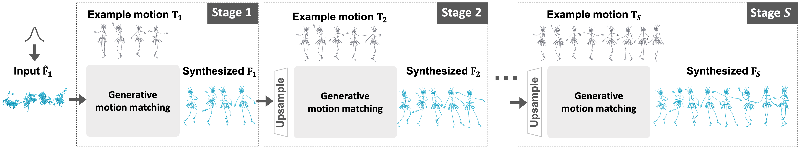

1. FBX parser in Three.js is not robust and lacks foot contact fix in the demo, may produce artifacts. Wait for Blender addon for better performance.
2. The demo is powered by 🤗Hugging Face using CPU,
which requires time for data transmission and multiple simultaneous uses may get stuck.
3. Click 'Next' to try more examples from Mixamo©.
See more instructions if any problem and have fun :)
We present GenMM, a generative model that "mines" as many diverse
motions as possible from a single or few example sequences. In stark contrast to existing data-driven methods,
which typically require long offline training time, are prone to visual artifacts, and tend to fail on large
and complex skeletons, GenMM inherits the training-free nature and
the superior quality of the well-known Motion Matching method. GenMM
can synthesize a high-quality motion within a fraction of a second, even with
highly complex and large skeletal structures.

At the heart of our generative framework lies the generative motion matching module,
which utilizes the bidirectional visual similarity as a generative cost function to motion matching,
and operates in a multi-stage framework to progressively refine a random guess using exemplar motion matches.
* Blue border indicates the input motion sequence.
From a single example, our framework generates, within a second, diverse motion sequences for even highly complex and large skeletons, including the animation of the clothes and eyes.
Motion Completion. Users can provide the lower-body motion and our method completes with diverse motions.
Key Frame-guided Generation. We can generate diverse novel motion sequence that follow the user given key frame poses.
Infinite Looping. By simply specifying the starting and ending pose to be identical, we can generate a infinitely looping animation.
Motion Reassembly. Given two motion sequences with heterogeneous skeletons, our method can combine them to form a new creature with coherent and natural motion.
Locomotion. When a locolotion is given as input, our framework can generate high-quality output with a different trajectory.
We compare our generated results to classic and state-of-the-art techniques that can use a single input sequence. Our method outperforms these methods with diverse and high-quality results, where highly dynamic motions are well preserved.
GANimator struggles to incorporate all examples, resulting in the loss of a significant portion of exemplar motion patches in the synthesis. In contrast, our method effectively covers all examples, resulting in high coverage score.
Skeleton-aware motion patch extraction enables the generation of more diverse sequences, such as waving with one hand, compared to only generating sequences with two hands waving simultaneously without it.
[1]. Li, Yan, Tianshu Wang, and Heung-Yeung Shum. "Motion texture: a two-level statistical model for character motion synthesis." Proceedings of the 29th annual conference on Computer graphics and interactive techniques. 2002.
@article{weiyu23GenMM,
author = {Weiyu Li and Xuelin Chen and Peizhuo Li and Olga Sorkine-Hornung and Baoquan Chen},
title = {Example-based Motion Synthesis via Generative Motion Matching},
journal = {ACM Transactions on Graphics (TOG)},
year = {2023},
publisher = {ACM}
}